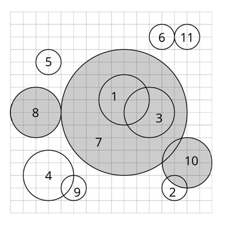

在平面上，有 n 个圆，记为 c_1, c_2, \ldots, c_n 。我们尝试对这些圆运行这个算法：
1. 找到这些圆中半径最大的。如果有多个半径最大的圆，选择编号最小的。记为 c_i 。
2. 删除 ci 及与其有交集的所有圆。两个圆有交集当且仅当平面上存在一个点，这个点同时在这两个圆的圆周上或圆内。
（如果平面上存在一个点被这两个圆所包含，我们称这两个圆有交集。一个点被一个圆包含当且仅当它位于圆内或圆周上。）
3. 重复上面两个步骤直到所有的圆都被删除。

当 ci 被删除时，若循环中第1步选择的圆是 cj ，我们说 ci 被 cj 删除。对于每个圆，求出它是被哪一个圆删除的。